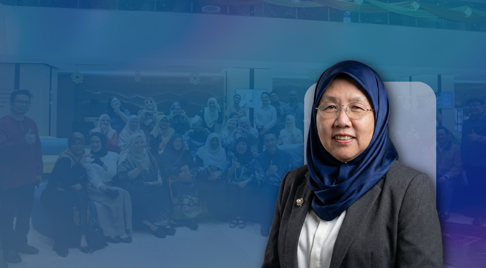

Get immediate assistance and quick responses to your queries through our dedicated WhatsApp channel.
Learn more →

Welcome to AAPD 2026Kota Kinabalu
Welcoming Speech
A warm welcome to the 18th International Conference of The Asian Academy of Preventive Dentistry
Dear Esteemed Colleagues, Researchers, Practitioners, and Partners,
On behalf of the Organising Committee, I extend the warmest of greetings and a sincere invitation to join us for the 18th International Conference of the Asian Academy of Preventive Dentistry (18th ICAAPD). We are thrilled to host this prestigious event in the heart of Borneo, the strategic and beautiful city of Kota Kinabalu, Sabah, Malaysia, from 30 September to 3 October 2026 at the world-class Sabah International Convention Centre (SICC).
Conference Theme & Focus
Our theme for this year’s conference, the second time Malaysia has had the honor of hosting, is “Empowering Communities Through Preventive Dentistry”. The 18th ICAAPD is designed to be the premier regional platform where leading minds converge to synthesize the latest scientific advancements, translate research into actionable public health policies, and foster regional collaboration to address Asia’s unique oral health challenges.
Our Host City
While the SICC provides a world-class environment for academic exchange, we invite you to experience the natural majesty of our host city, Kota Kinabalu (KK), Sabah—known affectionately as the “Land Below the Wind.” KK is a charming, modern city that offers international-standard accommodation and serves as the celebrated gateway to Mount Kinabalu, one of Southeast Asia’s tallest peaks.
We encourage you to explore nearby pristine islands and beaches, immerse yourself in local cultural villages and markets, and savour the region’s diverse and renowned cuisine. We believe this stunning backdrop will provide the perfect setting.
At this conference, we aim to:
- Advance Science: Critically evaluate the latest evidence, research, and technological advancements, including digital dentistry, AI, and tele-dentistry.
- Focus on Asia: Develop adaptable, cost-effective strategies for high-burden diseases such as early childhood caries and periodontal disease, with emphasis on high-risk and ageing populations in the Asian context.
- Strengthen Public Health: Promote robust community- and school-based preventive programmes that enhance oral health literacy and encourage sustainable healthy behaviours.
- Accelerate Collaboration: Facilitate networking among researchers, policymakers, clinicians, and industry partners to harmonise preventive dentistry standards regionally and globally.
We eagerly anticipate your active participation. By attending the 18th ICAAPD, you will not only gain critical knowledge but also forge valuable connections that will shape the future of oral health across the continent.
We look forward to welcoming you to Kota Kinabalu, Sabah in 2026!
Yours sincerely,
Professor Rahimah Abdul Kadir
17th AAPD President (2025–2026) and Chairperson, Organising Committee 18th ICAAPD
Contact Us
We are always ready to help you and answer your questions.
Send us your comprehensive questions, feedback, or detailed requests, and we'll get back to you promptly.
Learn more →Stay informed, engage with our community, and receive updates directly in your social feed.
Learn more →